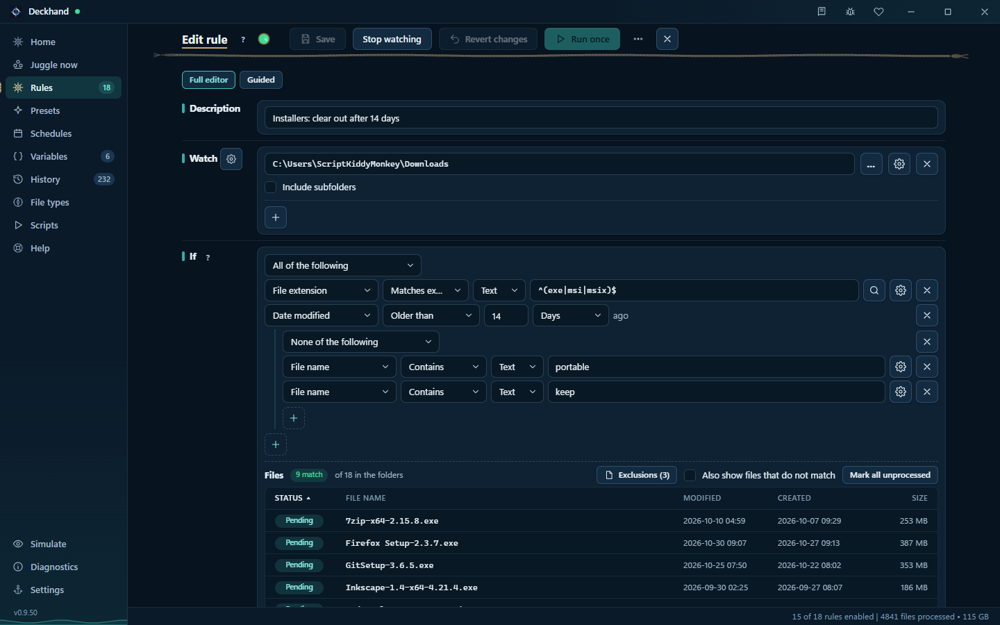
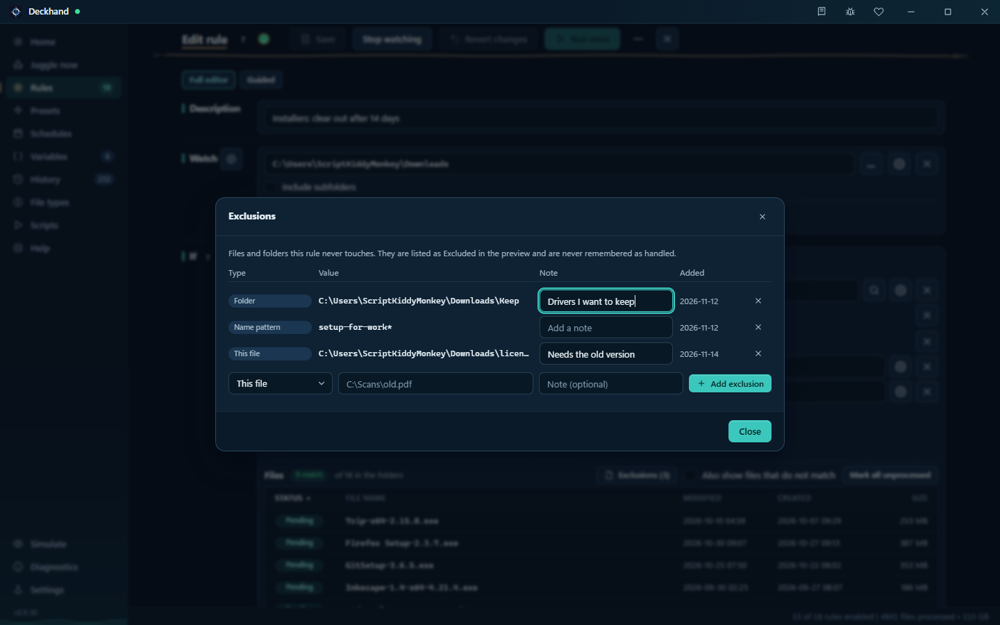

Conditions and exclusions
Choose which files a rule handles, and which files it must never touch.
The If section decides which files a rule handles. Each row tests one thing about the file. Exclusions are a separate safety net that wins over everything else.
Rows and groups
Rows are joined by a group:
| Group | A file matches when |
|---|---|
| All of the following | Every row is true. |
| Any of the following | At least one row is true. |
| None of the following | No row is true. |
The first screenshot is the rule Installers: clear out after 14 days in the Full editor. An All of the following group holds three things: the file extension matches ^(exe|msi|msix)$, the date modified is older than 14 days, and a None of the following group that leaves out file names containing portable or keep. The list underneath shows the 9 files in Downloads that match.


To nest a group, choose All / Any of the following in a row's first dropdown. The row turns into a group you can fill with its own rows.
The second screenshot is the rule Scans: read the sender and name the file. An All of the following group contains the extension test, an Any of the following group with three File contents (text) rows (Amount due, Statement and a regular expression), and a file size test, larger than 100 Kb. A scan matches when it has one of those phrases.

What a row can test
- Names and paths: file name, extension, folder name, folder path.
- Dates: created, modified, accessed, compared with now ("older than 30 days") or a fixed day.
- Size: bytes, Kb, Mb or Gb.
- File type: a group such as Audio or Spreadsheet, or a specific type.
- Metadata: PDF, audio and image details such as author, artist or date taken.
- File contents: the text inside a file. One entry covers plain text, PDF, Word, Excel, PowerPoint and OpenDocument files and, through OCR, pictures and scanned PDFs. Its gear sets how the text is read.
- Duplicates and folder age.
The full list is in the Conditions reference.
Text tests and wildcards
Text rows compare names, paths and other text. With wildcards on:
| Pattern | Meaning |
|---|---|
* | Any letters inside one word |
** | Anything |
? | One character |
| A space | Any whitespace |
"Does not contain" and other negative tests are true when the value is missing. For example, "author is not Bob" matches a file with no author. Positive tests, and number and date tests, are false when the value is missing.
Duplicates
The duplicate condition matches copies of the same file. One copy is always kept, the oldest or the newest as you choose. The others match. Deckhand never removes the last copy.
Exclusions
Excluded files are files a rule or preset never touches. Add them in the Exclusions section of the editor, or from the "N files unticked" bar under a preview.
| Exclude by | Example |
|---|---|
| This exact file | A specific path |
| File name | invoice.pdf |
| Name pattern | draft* |
| Folder | C:\Scans\Keep |
| Extension | .log |
The next screenshot is the Exclusions dialog of the Installers rule. It lists three exclusions with their type, value, an optional note and the day each was added: the folder Downloads\Keep, the name pattern setup-for-work* and one file. A new exclusion is added in the row at the bottom.


Excluded files are listed under Excluded in the preview. They are never remembered as handled and are never changed. Remove an exclusion and the rule looks at the file again.
Skipping folders in a watch folder
Use the gear next to the watch folder to skip whole folders. See Rules, folders and watching.